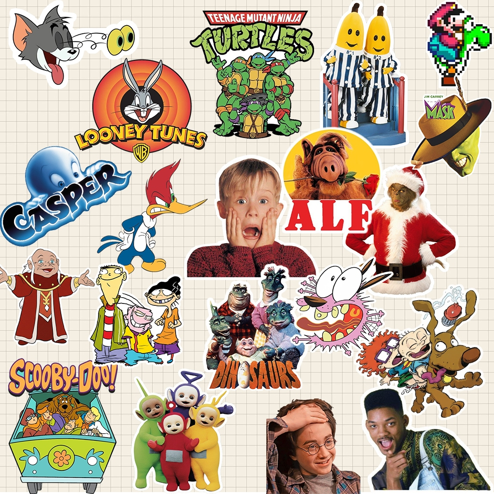

80 • 90 • 2000
HISTÓRIAS QUE ATRAVESSARAM GERAÇÕES.
Uma viagem pela TV, pelos heróis e pelas animações que transformaram tardes comuns em grandes aventuras.
APERTAR O PLAY80 • 90 • 2000
Uma viagem pela TV, pelos heróis e pelas animações que transformaram tardes comuns em grandes aventuras.
APERTAR O PLAY
ANTES DOS ANOS 90
Duas produções anteriores aos anos 90 que permaneceram vivas na memória de quem cresceu cercado por fantasia e aventura.
1986
1983
FAIXA ESPECIAL
Tokusatsu, ação e personagens que viraram memória afetiva.
METAL HERO
NINJA HERO
TOKUSATSU
O PASSADO CONTINUA PRESENTE
CONTINUAÇÃO
CULTURA POP
MISTÉRIO
FIM DA FITA?
Algumas histórias envelhecem. Outras viram memória.